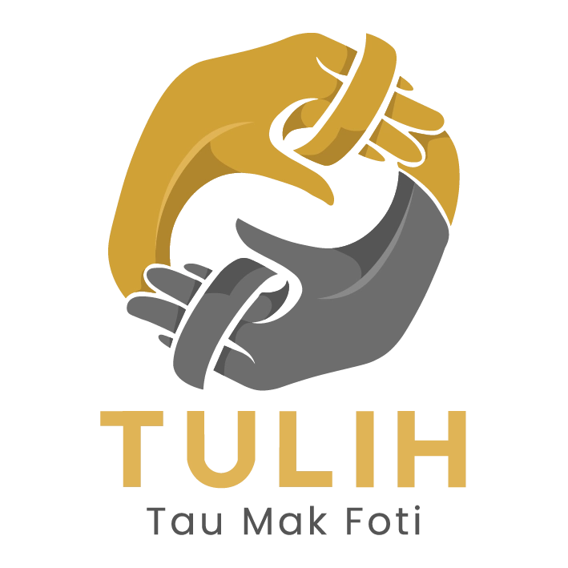

Bem-vindu ba Koperativa TULIH
Tula Liman Hamutuk hodi hametin ekonomia no harii futuru ne'ebé di'ak ba ita hotu.
Seguru & Fiar
Ita-nia osan rai ho seguru no jestaun ne'ebé transparente husi ami nia ekipa profisionál.
Funan Ki'ik
Oferese kréditu ho taxa funan ne'ebé ki'ik hodi ajuda dezenvolve ita-boot nia negósiu.
Dezenvolve Hamutuk
Prinsípiu koperativa nian mak tulun malu atu atinji susesu finanseiru hamutuk.
Kona-ba Ami
Koperativa Tula Liman Hamutuk
Hahu husi vizaun ida atu hasa'e kbiit finanseiru komunidade nian, Koperativa TULIH harii hodi sai parseiru ne'ebé fiar-an ba ita-nia membru sira. Ami foka ba poupança no kréditu ne'ebé justu no sustentavel.
- Atendimentu lalais no amigavel
- Jestaun osan ne'ebé transparente
- Apoiu ba mikro-negósiu

Mai Hamutuk ho Ami!
Keta lakon oportunidade atu dezenvolve ita-nia ekonomia. Rejistu nu'udar membru Koperativa TULIH ohin kedas.
Registu Agora